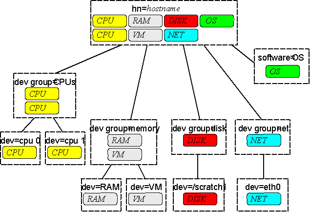

Definition of Schema
A schema is the collection of attribute type definitions, object class definitions and other information which a server uses to determine how to match a filter or attribute value assertion (in a compare operation) against the attributes of an entry, and whether to permit add and modify operations. [RFC 2252]
MDS 2.2 Information Model
Dashed boxes represent LDAP structural types, while the colors represent auxillary types.
The MDS 2.2
resource information models the physical and logical
components
of a compute resource as a hierarchy of elements. There are only
a small number of MDS elemental types, corresponding to LDAP structural
objectclasses and representing little more than their names:
class MdsVo
contains attr Mds-Vo-name
class MdsHost
contains attr Mds-Host-hn
class MdsDevice
contains attr Mds-Device-name
class MdsDeviceGroup
contains attr Mds-Device-Group-name
...
A complementary set of "auxiliary" types adds information about the particular elemental instances. The LDAP auxiliary types are special in that they can be added to a structurally typed object to extend it with more information. The MDS 2.2 information model uses this feature to merge information "upward" in the object tree---while a leaf node may contain information about a single resource instance, a parent node may contain the merged information about several instances:
dn: Mds-Device-Group-name=memory, ...
objectclass: MdsMemoryRamTotal
objectclass: MdsMemoryVmTotal
objectclass: MdsDeviceGroup
Mds-Device-Group-name: memory
Mds-validfrom: 200110030128.12Z
Mds-validto: 200110030128.12Z
Mds-keepto: 200110030128.12Z
Mds-Memory-Ram-Total-sizeMB: 751
Mds-Memory-Ram-Total-freeMB: 642
Mds-Memory-Vm-Total-sizeMB: 1600
Mds-Memory-Vm-Total-freeMB: 1592
Mds-Memory-Ram-sizeMB: 751
Mds-Memory-Ram-freeMB: 642
Mds-Memory-Vm-sizeMB: 1600
Mds-Memory-Vm-freeMB: 1592
dn: Mds-Device-name=physical memory, Mds-Device-Group-name=memory, ...
objectclass: Mds
objectclass: MdsDevice
objectclass: MdsMemoryRam
Mds-Device-name: physical memory
Mds-Memory-Ram-sizeMB: 751
Mds-Memory-Ram-freeMB: 642
Mds-validfrom: 200110030128.12Z
Mds-validto: 200110030128.12Z
Mds-keepto: 200110030128.12Z
dn: Mds-Device-name=virtual memory, Mds-Device-Group-name=memory, ...
objectclass: Mds
objectclass:
MdsDevice
objectclass: MdsMemoryVm
Mds-Device-name: virtual memory
Mds-Memory-Vm-sizeMB: 1600
Mds-Memory-Vm-freeMB: 1592
Mds-validfrom: 200110030128.12Z
Mds-validto: 200110030128.12Z
Mds-keepto: 200110030128.12Z
This ability to merge multiple types allows the parent object to reflect the different types of each children, and therefore contain data from both of them.
The GRIS service provides a hierarchy of such objects for an SMP compute resource, merging data upward to the "host object" which contains all information about the host. This merged object is convenient for search filters expressing constraints on multiple data, but it loses some information due to the LDAP data model's inability to distinguish instances of a particular attribute value. For example, if a large SMP had 2 CPUs with speed X, and one CPU with speed Y, the host object would only represent that there is at least one CPU of each speed. One would have to visit the underlying CPU device objects to determine how many (or which) CPUs have a particular speed value.
The well-known MdsDeviceGroup object names "processors", "memory", "filesystems", and "networks" act as collection points for the instances of devices in those categories. The well-known MdsSoftwareDeployment name "operating system" references information about the booted operating system software on the resource.
The schema design includes support for clusters of SMPs, i.e. typical distributed memory processors, via other compute elements such as MdsHostNetnode and MdsHostNode to represent networked (or hidden) elements of a cluster, each of which may be an SMP resource. However, the default providers with MDS 2.2 do not include the platform-specific probes necessary to efficiently extract information from such systems.
The following is an index of schema definitions for MDS 2.2. Following that are descriptions of the schema object classes and attribute types.
Object class Mds
Attribute type Mds-validfrom
Attribute type Mds-validto
Attribute type Mds-keepto?
Object class MdsHost
Attribute type Mds-Host-hn
Object class MdsHostNetNode
Attribute type Mds-Host-NetNode-hn
Object class MdsHostNode
Attribute type Mds-Host-Node-name
Object class MdsHostNodeGroup
Attribute type Mds-Host-Node-Group-name
Object class MdsDevice
Attribute type Mds-Device-name
Object class MdsDeviceGroup
Attribute type Mds-Device-Group-name
Object class MdsSoftware
Attribute type Mds-Software-deployment
Object class MdsComputer
Attribute type Mds-Computer-isa+
Attribute type Mds-Computer-platform+
Object class MdsComputerTotal
Attribute type Mds-Computer-Total-nodeCount
Object class MdsOs
Attribute type Mds-Os-name+
Attribute type Mds-Os-release+
Attribute type Mds-Os-version+
Object class MdsCpu
Attribute type Mds-Cpu-vendor+
Attribute type Mds-Cpu-model+
Attribute type Mds-Cpu-version+
Attribute type Mds-Cpu-features*
Attribute type Mds-Cpu-speedMHz*
Object class MdsCpuSmp
Attribute type Mds-Cpu-Smp-size+
Object class MdsCpuCache
Attribute type Mds-Cpu-Cache-l1kB*
Attribute type Mds-Cpu-Cache-l1ikB*
Attribute type Mds-Cpu-Cache-l1dkB*
Attribute type Mds-Cpu-Cache-l2kB*
Object class MdsCpuFree
Attribute type Mds-Cpu-Free-1minX100+
Attribute type Mds-Cpu-Free-5minX100+
Attribute type Mds-Cpu-Free-15minX100+
Object class MdsCpuTotal
Attribute type Mds-Cpu-Total-count
Object class MdsCpuTotalFree
Attribute type Mds-Cpu-Total-Free-1minX100
Attribute type Mds-Cpu-Total-Free-5minX100
Attribute type Mds-Cpu-Total-Free-15minX100
Object class MdsMemoryRam
Attribute type Mds-Memory-Ram-sizeMB+
Attribute type Mds-Memory-Ram-freeMB+
Object class MdsMemoryRamTotal
Attribute type Mds-Memory-Ram-Total-sizeMB
Attribute type Mds-Memory-Ram-Total-freeMB
Object class MdsMemoryVm
Attribute type Mds-Memory-Vm-sizeMB+
Attribute type Mds-Memory-Vm-freeMB+
Object class MdsMemoryVmTotal
Attribute type Mds-Memory-Vm-Total-sizeMB
Attribute type Mds-Memory-Vm-Total-freeMB
Object class MdsFs
Attribute type Mds-Fs-mount*
Attribute type Mds-Fs-sizeMB+
Attribute type Mds-Fs-freeMB+
Object class MdsFsTotal
Attribute type Mds-Fs-Total-count
Attribute type Mds-Fs-Total-sizeMB
Attribute type Mds-Fs-Total-freeMB
Object class MdsNet
Attribute type Mds-Net-name+
Attribute type Mds-Net-addr+
Attribute type Mds-Net-netaddr+
Attribute type Mds-Net-mtuB+
Object class MdsNetTotal
Attribute type Mds-Net-Total-count
Object class MdsService
Attribute type Mds-Service-type
Attribute type Mds-Service-protocol+
Attribute type Mds-Service-hn
Attribute type Mds-Service-port
Object class MdsServiceLdap
Attribute type Mds-Service-Ldap-suffix+
Attribute type Mds-Service-Ldap-timeout*
Attribute type Mds-Service-Ldap-sizelimit*
Object class Mds (OID 1.3.6.1.4.1.3536.2.6) represents the abstract root of all MDS data types requiring dynamic metadata.
Attribute type Mds-validfrom (OID 1.3.6.1.4.1.3536.2.6.0.1 from class Mds) is a required single-valued attribute, using attribute syntax gentime, and represents the global time at which the object and its information is first valid.
Attribute type Mds-validto (OID 1.3.6.1.4.1.3536.2.6.0.2 from class Mds) is a required single-valued attribute, using attribute syntax gentime, and represents the global time at which the object information is no longer valid.
Attribute type Mds-keepto (OID 1.3.6.1.4.1.3536.2.6.0.3 from class Mds) is an optional single-valued attribute, using attribute syntax gentime, and represents the global time at which the object should be deleted. The purge time should always be later than the expiration time, if it exists. The existence of a purge time hints that some information in the object may be useful even when the object is invalid, i.e. that the invalid object is better than no information at all.
Object class MdsHost (OID 1.3.6.1.4.1.3536.2.6.1.1) inherits Mds and represents a networked computer and its various service access points, e.g. a workstation, SMP parallel system, or the front-end server for a distributed parallel machine.
Attribute type Mds-Host-hn (OID 1.3.6.1.4.1.3536.2.6.1.1.0.1 from class MdsHost) is the required single-valued RDN attribute, using attribute syntax cis, and contains the fully-qualified public hostname for a networked computer.
Object class MdsHostNetNode (OID 1.3.6.1.4.1.3536.2.6.1.1.1) inherits Mds and represents a networked computing element of a distributed parallel machine, e.g. a node that has a public network interface.
Attribute type Mds-Host-NetNode-hn (OID 1.3.6.1.4.1.3536.2.6.1.1.1.0.1 from class MdsHostNetNode) is the required single-valued RDN attribute, using attribute syntax cis, and contains the fully-qualified public hostname for a networked computing element, e.g. the public hostname of a compute node.
Object class MdsHostNode (OID 1.3.6.1.4.1.3536.2.6.1.1.2) inherits Mds and represents a hidden computing element of a distributed parallel machine, e.g. a node that does not have a public network interface.
Attribute type Mds-Host-Node-name (OID 1.3.6.1.4.1.3536.2.6.1.1.2.0.1 from class MdsHostNode) is the required single-valued RDN attribute, using attribute syntax cis, and contains the locally unique name of a hidden computing element within a service or management scope, e.g. a node label or number within a distributed parallel machine.
Object class MdsHostNodeGroup (OID 1.3.6.1.4.1.3536.2.6.1.1.2.1) inherits Mds and represents a collection of computing elements, e.g. a set of nodes that are designated for a particular operational role.
Attribute type Mds-Host-Node-Group-name (OID 1.3.6.1.4.1.3536.2.6.1.1.2.1.0.1 from class MdsHostNodeGroup) is the required single-valued RDN attribute, using attribute syntax cis, and contains the locally unique name of a group of networked computing elements within a service or management scope, e.g. a compute partition within a distributed parallel machine.
Object class MdsDevice (OID 1.3.6.1.4.1.3536.2.6.1.2) inherits Mds and represents a local user-visible physical or logical device on a computing element, e.g. a cpu, filesystem, or network interface.
Attribute type Mds-Device-name (OID 1.3.6.1.4.1.3536.2.6.1.2.0.1 from class MdsDevice) is the required single-valued RDN attribute, using attribute syntax cis, and contains a locally unique name for a device on a computing element.
Object class MdsDeviceGroup (OID 1.3.6.1.4.1.3536.2.6.1.2.1) inherits Mds and represents a group of related local devices, organized for conveniently scoped searches.
Attribute type Mds-Device-Group-name (OID 1.3.6.1.4.1.3536.2.6.1.2.1.0.1 from class MdsDeviceGroup) is the required single-valued RDN attribute, using attribute syntax cis, and contains a locally unique name for a group of devices on a computing element.
Object class MdsSoftware (OID 1.3.6.1.4.1.3536.2.6.1.3) inherits Mds and represents an instance of installed (deployed) software on a computing platform, e.g. a particular version of software available for use.
Attribute type Mds-Software-deployment (OID 1.3.6.1.4.1.3536.2.6.1.3.0.1 from class MdsSoftware) is the required single-valued RDN attribute, using attribute syntax cis, and contains a locally unique name for an instance of deployed software.
Object class MdsComputer (OID 1.3.6.1.4.1.3536.2.6.2.1) inherits Mds and represents auxilliary information about a shared-memory computing element (standalone or part of a distributed parallel computer).
Attribute type Mds-Computer-isa (OID 1.3.6.1.4.1.3536.2.6.2.1.0.1 from class MdsComputer) is a required multi-valued attribute, using attribute syntax cis, and informally names the Instruction Set Architecture (ISA) of the computing element.
Attribute type Mds-Computer-platform (OID 1.3.6.1.4.1.3536.2.6.2.1.0.2 from class MdsComputer) is a required multi-valued attribute, using attribute syntax cis, and informally describes the platform type of the computing element.
Object class MdsComputerTotal (OID 1.3.6.1.4.1.3536.2.6.2.1.1) inherits Mds and represents summary information about one or more shared-memory computing elements.
Attribute type Mds-Computer-Total-nodeCount (OID 1.3.6.1.4.1.3536.2.6.2.1.1.0.3 from class MdsComputerTotal) is a required single-valued attribute, using attribute syntax int, and indicates the number of computing elements being represented.
Object class MdsOs (OID 1.3.6.1.4.1.3536.2.6.2.3) inherits Mds and represents auxilliary information about the installed operating system (OS).
Attribute type Mds-Os-name (OID 1.3.6.1.4.1.3536.2.6.2.3.0.1 from class MdsOs) is a required multi-valued attribute, using attribute syntax cis, and informally names the OS using a vendor-specific convention.
Attribute type Mds-Os-release (OID 1.3.6.1.4.1.3536.2.6.2.3.0.2 from class MdsOs) is a required multi-valued attribute, using attribute syntax cis, and informally names the OS release using a vendor-specific convention.
Attribute type Mds-Os-version (OID 1.3.6.1.4.1.3536.2.6.2.3.0.3 from class MdsOs) is a required multi-valued attribute, using attribute syntax cis, and informally names the OS or kernel version using a vendor-specific convention.
Object class MdsCpu (OID 1.3.6.1.4.1.3536.2.6.2.4) inherits Mds and represents auxilliary information about general-purpose processors (CPUs) in an SMP computing element.
Attribute type Mds-Cpu-vendor (OID 1.3.6.1.4.1.3536.2.6.2.4.0.1 from class MdsCpu) is a required multi-valued attribute, using attribute syntax cis, and informally names the CPU vendor.
Attribute type Mds-Cpu-model (OID 1.3.6.1.4.1.3536.2.6.2.4.0.2 from class MdsCpu) is a required multi-valued attribute, using attribute syntax cis, and informally names the CPU model.
Attribute type Mds-Cpu-version (OID 1.3.6.1.4.1.3536.2.6.2.4.0.3 from class MdsCpu) is a required multi-valued attribute, using attribute syntax cis, and informally names the CPU version or stepping.
Attribute type Mds-Cpu-features (OID 1.3.6.1.4.1.3536.2.6.2.4.0.4 from class MdsCpu) is an optional multi-valued attribute, using attribute syntax cis, and informally names optional CPU features.
Attribute type Mds-Cpu-speedMHz (OID 1.3.6.1.4.1.3536.2.6.2.4.0.5 from class MdsCpu) is an optional multi-valued attribute, using attribute syntax int, and indicates the clock speed of a CPU.
Object class MdsCpuSmp (OID 1.3.6.1.4.1.3536.2.6.2.4.1) inherits Mds and
Attribute type Mds-Cpu-Smp-size (OID 1.3.6.1.4.1.3536.2.6.2.4.1.0.1 from class MdsCpuSmp) is a required multi-valued attribute, using attribute syntax int, and indicates the number of CPUs in an SMP configuration.
Object class MdsCpuCache (OID 1.3.6.1.4.1.3536.2.6.2.4.2) inherits Mds and
Attribute type Mds-Cpu-Cache-l1kB (OID 1.3.6.1.4.1.3536.2.6.2.4.2.0.1 from class MdsCpuCache) is an optional multi-valued attribute, using attribute syntax int, and indicates first-level unified cache size (in kilo-bytes) of a CPU.
Attribute type Mds-Cpu-Cache-l1ikB (OID 1.3.6.1.4.1.3536.2.6.2.4.2.0.2 from class MdsCpuCache) is an optional multi-valued attribute, using attribute syntax int, and indicates first-level instruction cache size (in kilo-bytes) of a CPU.
Attribute type Mds-Cpu-Cache-l1dkB (OID 1.3.6.1.4.1.3536.2.6.2.4.2.0.3 from class MdsCpuCache) is an optional multi-valued attribute, using attribute syntax int, and indicates first-level data cache size (in kilo-bytes) of a CPU.
Attribute type Mds-Cpu-Cache-l2kB (OID 1.3.6.1.4.1.3536.2.6.2.4.2.0.4 from class MdsCpuCache) is an optional multi-valued attribute, using attribute syntax int, and indicates second-level unified cache size (in kilo-bytes) of a CPU.
Object class MdsCpuFree (OID 1.3.6.1.4.1.3536.2.6.2.4.3) inherits Mds and
Attribute type Mds-Cpu-Free-1minX100 (OID 1.3.6.1.4.1.3536.2.6.2.4.3.0.1 from class MdsCpuFree) is a required multi-valued attribute, using attribute syntax float, and indicates the 1-minute average processor availability for an SMP computing element, which is the difference between the available CPUs and the average runnable task count during that time.
Attribute type Mds-Cpu-Free-5minX100 (OID 1.3.6.1.4.1.3536.2.6.2.4.3.0.2 from class MdsCpuFree) is a required multi-valued attribute, using attribute syntax float, and indicates the 5-minute average processor availability for an SMP computing element, which is the difference between the available CPUs and the average runnable task count during that time.
Attribute type Mds-Cpu-Free-15minX100 (OID 1.3.6.1.4.1.3536.2.6.2.4.3.0.3 from class MdsCpuFree) is a required multi-valued attribute, using attribute syntax float, and indicates the 15-minute average processor availability for an SMP computing element, which is the difference between the available CPUs and the average runnable task count during that time.
Object class MdsCpuTotal (OID 1.3.6.1.4.1.3536.2.6.2.4.4) inherits Mds and represents summary information about one or more SMP computing elements.
Attribute type Mds-Cpu-Total-count (OID 1.3.6.1.4.1.3536.2.6.2.4.4.0.1 from class MdsCpuTotal) is a required single-valued attribute, using attribute syntax int, and indicates the total number of CPUs in all computing elements.
Object class MdsCpuTotalFree (OID 1.3.6.1.4.1.3536.2.6.2.4.4.2) inherits Mds and
Attribute type Mds-Cpu-Total-Free-1minX100 (OID 1.3.6.1.4.1.3536.2.6.2.4.4.2.0.1 from class MdsCpuTotalFree) is a required single-valued attribute, using attribute syntax float, and indicates the 1-minute average processor availability for all computing elements, which is the difference between the available CPUs and the average runnable task count during that time.
Attribute type Mds-Cpu-Total-Free-5minX100 (OID 1.3.6.1.4.1.3536.2.6.2.4.4.2.0.2 from class MdsCpuTotalFree) is a required single-valued attribute, using attribute syntax float, and indicates the 5-minute average processor availability for all computing elements, which is the difference between the available CPUs and the average runnable task count during that time.
Attribute type Mds-Cpu-Total-Free-15minX100 (OID 1.3.6.1.4.1.3536.2.6.2.4.4.2.0.3 from class MdsCpuTotalFree) is a required single-valued attribute, using attribute syntax float, and indicates the 15-minute average processor availability for all computing elements, which is the difference between the available CPUs and the average runnable task count during that time.
Object class MdsMemoryRam (OID 1.3.6.1.4.1.3536.2.6.2.5.1.1) inherits Mds and represents the physical random-access memory (RAM) in a computing element.
Attribute type Mds-Memory-Ram-sizeMB (OID 1.3.6.1.4.1.3536.2.6.2.5.1.1.0.1 from class MdsMemoryRam) is a required multi-valued attribute, using attribute syntax int, and represents the configured RAM size (in mega-bytes).
Attribute type Mds-Memory-Ram-freeMB (OID 1.3.6.1.4.1.3536.2.6.2.5.1.1.0.2 from class MdsMemoryRam) is a required multi-valued attribute, using attribute syntax int, and represents the unallocated RAM size (in mega-bytes).
Object class MdsMemoryRamTotal (OID 1.3.6.1.4.1.3536.2.6.2.5.1.1.1) inherits Mds and represents summary information about the physical random-access memory in one or more computing elements.
Attribute type Mds-Memory-Ram-Total-sizeMB (OID 1.3.6.1.4.1.3536.2.6.2.5.1.1.1.0.1 from class MdsMemoryRamTotal) is a required single-valued attribute, using attribute syntax int, and represents the total configured RAM size (in mega-bytes) for one or more computing elements.
Attribute type Mds-Memory-Ram-Total-freeMB (OID 1.3.6.1.4.1.3536.2.6.2.5.1.1.1.0.2 from class MdsMemoryRamTotal) is a required single-valued attribute, using attribute syntax int, and represents the total unallocated RAM size (in mega-bytes) for one or more computing elements.
Object class MdsMemoryVm (OID 1.3.6.1.4.1.3536.2.6.2.5.1.2) inherits Mds and represents the disk-based virtual memory (VM) in a computing element.
Attribute type Mds-Memory-Vm-sizeMB (OID 1.3.6.1.4.1.3536.2.6.2.5.1.2.0.1 from class MdsMemoryVm) is a required multi-valued attribute, using attribute syntax int, and represents the configured VM size (in mega-bytes).
Attribute type Mds-Memory-Vm-freeMB (OID 1.3.6.1.4.1.3536.2.6.2.5.1.2.0.2 from class MdsMemoryVm) is a required multi-valued attribute, using attribute syntax int, and represents the unallocated VM size (in mega-bytes).
Object class MdsMemoryVmTotal (OID 1.3.6.1.4.1.3536.2.6.2.5.1.2.1) inherits Mds and
Attribute type Mds-Memory-Vm-Total-sizeMB (OID 1.3.6.1.4.1.3536.2.6.2.5.1.2.1.0.1 from class MdsMemoryVmTotal) is a required single-valued attribute, using attribute syntax int, and represents the total configured VM size (in mega-bytes) for one or more computing elements.
Attribute type Mds-Memory-Vm-Total-freeMB (OID 1.3.6.1.4.1.3536.2.6.2.5.1.2.1.0.2 from class MdsMemoryVmTotal) is a required single-valued attribute, using attribute syntax int, and represents the total unallocated VM size (in mega-bytes) for one or more computing elements.
Object class MdsFs (OID 1.3.6.1.4.1.3536.2.6.2.5.2) inherits Mds and represents a information about a configured filesystem in a computing element.
Attribute type Mds-Fs-mount (OID 1.3.6.1.4.1.3536.2.6.2.5.2.0.1 from class MdsFs) is an optional multi-valued attribute, using attribute syntax cis, and indicates the mounted pathname to the filesystem.
Attribute type Mds-Fs-sizeMB (OID 1.3.6.1.4.1.3536.2.6.2.5.2.0.2 from class MdsFs) is a required multi-valued attribute, using attribute syntax int, and represents the formatted filesystem size in mega-bytes.
Attribute type Mds-Fs-freeMB (OID 1.3.6.1.4.1.3536.2.6.2.5.2.0.3 from class MdsFs) is a required multi-valued attribute, using attribute syntax int, and represents the unallocated filesystem size in mega-bytes.
Object class MdsFsTotal (OID 1.3.6.1.4.1.3536.2.6.2.5.2.1) inherits Mds and represents summary information about the filesystems in one or more computing elements.
Attribute type Mds-Fs-Total-count (OID 1.3.6.1.4.1.3536.2.6.2.5.2.1.0.1 from class MdsFsTotal) is a required single-valued attribute, using attribute syntax int, and indicates the total number of filesystems being reported.
Attribute type Mds-Fs-Total-sizeMB (OID 1.3.6.1.4.1.3536.2.6.2.5.2.1.0.2 from class MdsFsTotal) is a required single-valued attribute, using attribute syntax int, and represents the total formatted filesystem size (in mega-bytes) for all filesystems.
Attribute type Mds-Fs-Total-freeMB (OID 1.3.6.1.4.1.3536.2.6.2.5.2.1.0.3 from class MdsFsTotal) is a required single-valued attribute, using attribute syntax int, and represents the total unallocated filesystem size (in mega-bytes) for all filesystems.
Object class MdsNet (OID 1.3.6.1.4.1.3536.2.6.2.6.1) inherits Mds and represents information about network interfaces in a computing element.
Attribute type Mds-Net-name (OID 1.3.6.1.4.1.3536.2.6.2.6.1.0.1 from class MdsNet) is a required multi-valued attribute, using attribute syntax cis, and informally names a network interface.
Attribute type Mds-Net-addr (OID 1.3.6.1.4.1.3536.2.6.2.6.1.0.2 from class MdsNet) is a required multi-valued attribute, using attribute syntax cis, and indicates the IP address of a network interface.
Attribute type Mds-Net-netaddr (OID 1.3.6.1.4.1.3536.2.6.2.6.1.0.3 from class MdsNet) is a required multi-valued attribute, using attribute syntax cis, and indicates the IP network address associated with a network interface.
Attribute type Mds-Net-mtuB (OID 1.3.6.1.4.1.3536.2.6.2.6.1.0.4 from class MdsNet) is a required multi-valued attribute, using attribute syntax int, and indicates the maximum transmission unit size (in bytes) associated with a network interface.
Object class MdsNetTotal (OID 1.3.6.1.4.1.3536.2.6.2.6.1.1) inherits Mds and represents summary information for all network interfaces a computing element.
Attribute type Mds-Net-Total-count (OID 1.3.6.1.4.1.3536.2.6.2.6.1.1.0.1 from class MdsNetTotal) is a required single-valued attribute, using attribute syntax int, and indicates the total number of network interfaces being reported.
Object class MdsService (OID 1.3.6.1.4.1.3536.2.6.2.7.1) inherits Mds and represents a network-accessible service in a way that can be discovered by remote clients.
Attribute type Mds-Service-type (OID 1.3.6.1.4.1.3536.2.6.2.7.1.0.1 from class MdsService) is a required single-valued attribute, using attribute syntax cis, and represents the protocol that is used by the service, e.g. the mechanism portion of the service URL.
Attribute type Mds-Service-protocol (OID 1.3.6.1.4.1.3536.2.6.2.7.1.0.2 from class MdsService) is a required multi-valued attribute, using attribute syntax cis, and represents the protocol version(s) that is(/are) used by the service.
Attribute type Mds-Service-hn (OID 1.3.6.1.4.1.3536.2.6.2.7.1.0.2 from class MdsService) is a required single-valued attribute, using attribute syntax cis, and represents the FQDN hostname of the host running the service, e.g. the host part of the service URL.
Attribute type Mds-Service-port (OID 1.3.6.1.4.1.3536.2.6.2.7.1.0.3 from class MdsService) is a required single-valued attribute, using attribute syntax int, and represents the TCP port number of the service, e.g. the port number part fo the service URL.
Object class MdsServiceLdap (OID 1.3.6.1.4.1.3536.2.6.2.7.1.1) inherits Mds and represents a service accessible by the LDAP protocol.
Attribute type Mds-Service-Ldap-suffix (OID 1.3.6.1.4.1.3536.2.6.2.7.1.1.0.1 from class MdsServiceLdap) is a required multi-valued attribute, using attribute syntax cis, and represents the root(s) of the logical service(s) in the LDAP server DIT.
Attribute type Mds-Service-Ldap-timeout (OID 1.3.6.1.4.1.3536.2.6.2.7.1.1.0.2 from class MdsServiceLdap) is an optional multi-valued attribute, using attribute syntax cis, and suggests a maximum LDAP operation timeout during normal function.
Attribute type Mds-Service-Ldap-sizelimit (OID 1.3.6.1.4.1.3536.2.6.2.7.1.1.0.3 from class MdsServiceLdap) is an optional multi-valued attribute, using attribute syntax cis, and suggests a maximum LDAP result size during normal function.